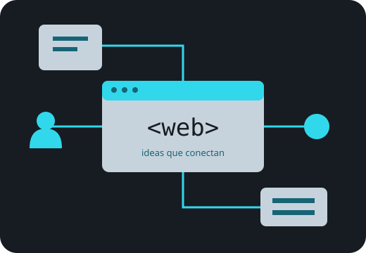

Sus orígenes
Explora una línea del tiempo con hitos que explican cómo creció la web.
Ver línea del tiempo →sitio/.EXPLORA · COMPRENDE · CONECTA
De los primeros documentos enlazados a las experiencias interactivas que usamos todos los días.
DEL HIPERTEXTO A LA INTERACCIÓN
La World Wide Web es un sistema de recursos conectados mediante hipervínculos. Para explorarlos usamos un navegador. Internet es la infraestructura de redes que permite transportar la información; la web es uno de los servicios que funciona sobre ella.
Recorrer la historia →
Explora una línea del tiempo con hitos que explican cómo creció la web.
Ver línea del tiempo →Conoce cómo HTML, CSS y JavaScript colaboran en una misma página.
Comparar tecnologías →Reflexiona sobre la web actual y prueba un formulario educativo.
Abrir formulario →